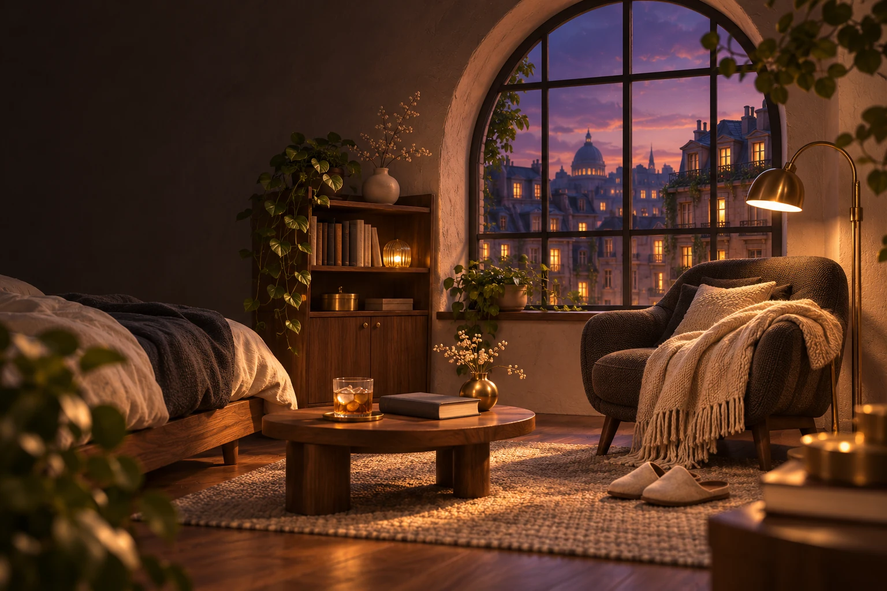
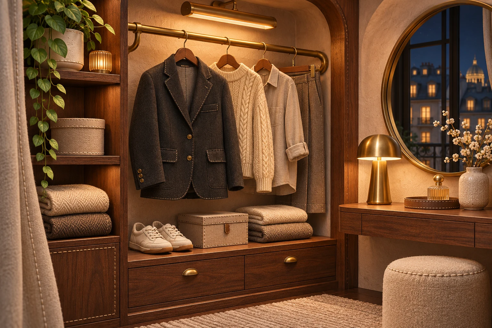

02 / The Desk
A seat by the window.
A home desk, a glowing screen, and a Gotchi with an opinion about the $XRP chart. Just for fun.

A new world from the House
Leave a light on.
A virtual pet world for your phone. Here’s a first look at where it all begins.
Take a look inside01 The starter room at dusk
The world
Every Gotchi starts with a room of their own. The light changes with your day, and the little things you put around the room give them more to do.
02 / The Desk
A home desk, a glowing screen, and a Gotchi with an opinion about the $XRP chart. Just for fun.

03 / The Wardrobe
Pick a jacket, swap the shoes and find a look that feels like them.
Environment concept art. Characters haven’t been revealed.
The Gotchis
In development at House of Cauliman.